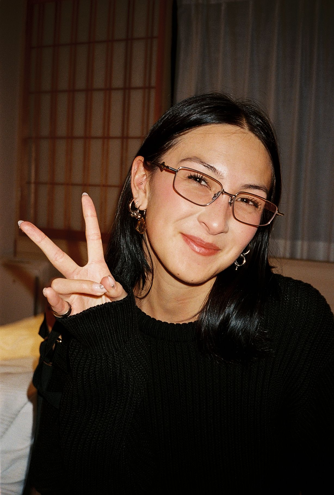

About
Art director & creative based in Stockholm, with a background in brand building, visual storytelling and multidisciplinary design across 3D, motion and graphic design.
Experience
2024 – Now
Art Director — J.LINDEBERG
2021 – 2024
Leading the global visual direction across campaigns, e-commerce, social and brand communication.
Key role in the 2025 visual rebrand.
Art Director — Made To Order
2022 – 2025
Campaigns, visual concepts and brand communication for H&M, H&M Beauty, & Other Stories, PUMA and GANT.
Course Leader & Lecturer — Mixed Reality / 3D Design
2017 – 2025
Beckmans College of Design, Hyper Island & Nyckelviksskolan. Courses and workshops in AR, AI, VR and 3D.
Freelance Creative & Designer
Visual communication and graphic design for H&M, Amazon Prime, Hazelight Studios and Assefa Communications.
Education
2019 – 2021
BFA, Visual Communication — Beckmans College of Design
2018 – 2019
Awarded the Peter Saville Scholarship for a graduation project on identity, gaming culture and digital avatars in 3D.
Visual Communication, Evening Course — Beckmans College of Design
2017 – 2018
Art & Visual Studies — Stockholm University